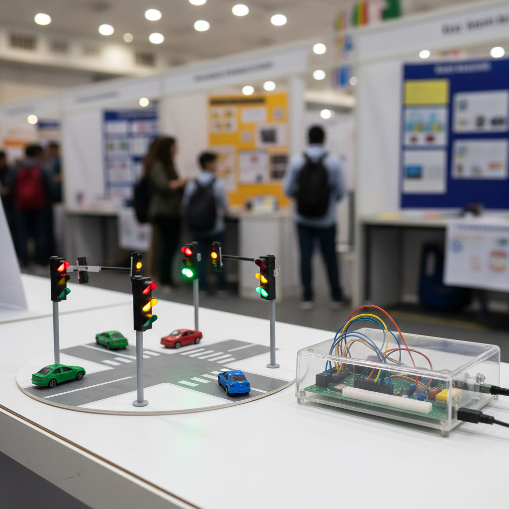
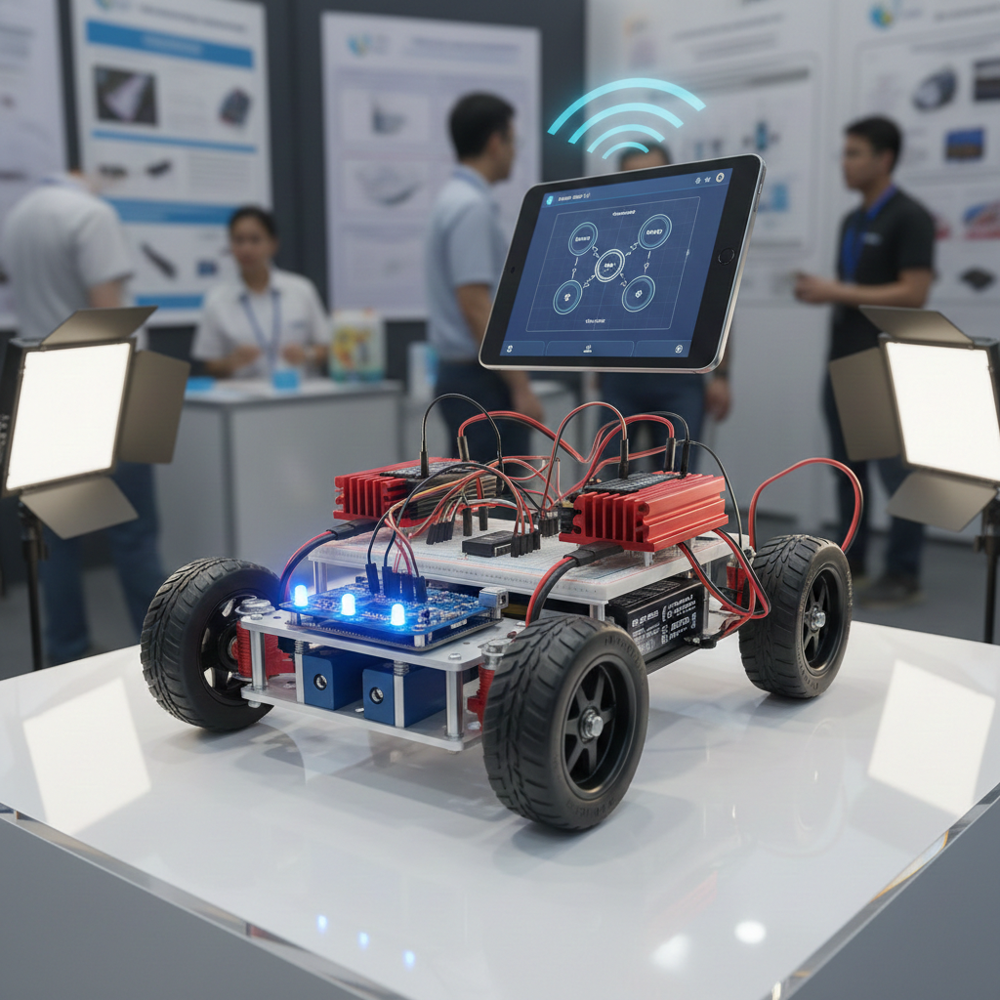
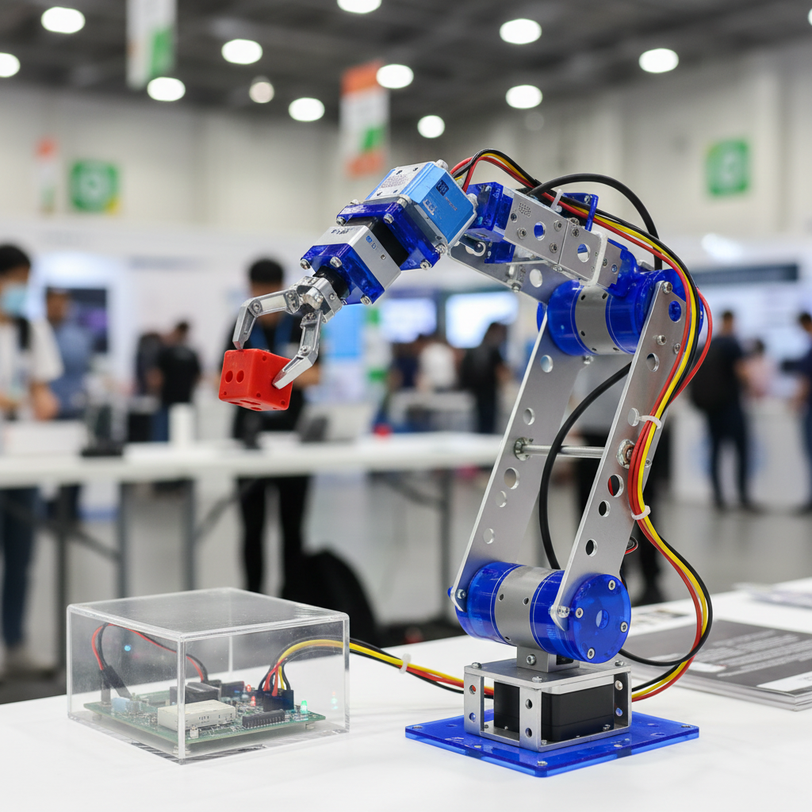
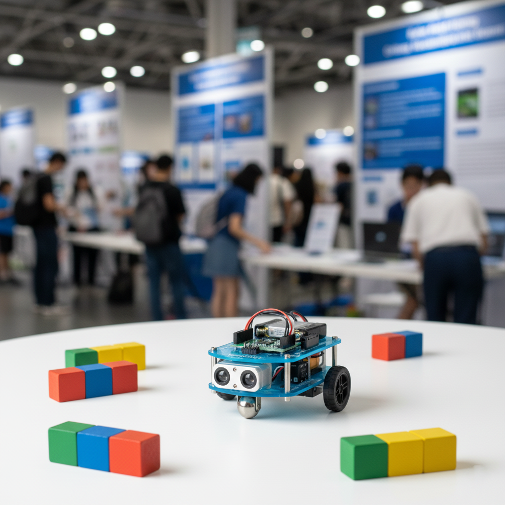
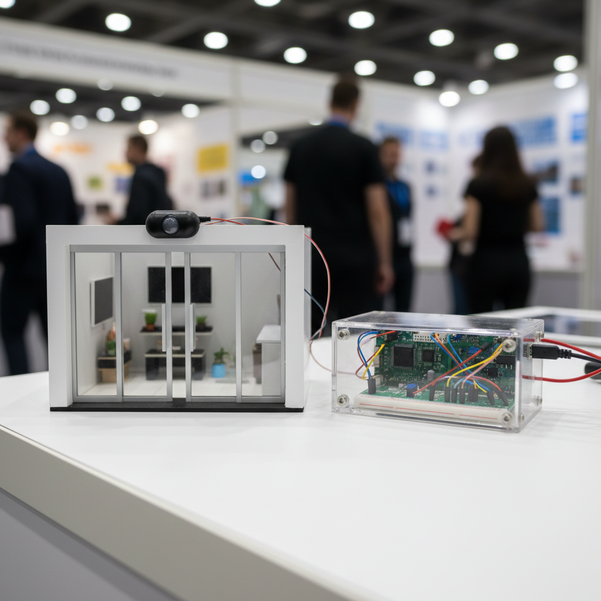

.png)
Robotics projects
Smart Traffic Light Control System
This project presents a smart traffic management system that controls traffic signals based on vehicle density. Sensors or programmed logic simulate traffic flow and adjust signal timing to reduce congestion.
- Ali Raza
- Hamza Siddiqui
- Usman Tariq
Team: Urban Innovators
Members name:


Bluetooth Controlled Robotic Vehicle
This project demonstrates a robot that can be controlled wirelessly using Bluetooth technology. Commands are sent from a mobile device to control the robot’s movement. It introduces wireless communication concepts.
- Bilal Khan
- Zain Abbas
- Farhan Ali
Team: Wireless Tech Crew
Members name:
Robotic Arm Working Model
This project demonstrates the working of a robotic arm using servo motors and programmed movements. The arm can lift, rotate, and place objects, simulating industrial automation tasks. It explains how robots are used in factories for assembly, packaging, and precision work where accuracy and repeatability are required.
- Arooj Malik
- Sara Iqbal
- Ahmed Hassan
Team: Mech Robotics Lab
Members name:


Obstacle Avoiding Robot
This robot is designed to detect and avoid obstacles using ultrasonic sensors. When an obstacle comes in front of the robot, the sensor measures the distance and sends data to the controller, which then changes the robot’s direction.
- Imran Sheikh
- Danish Ali
- Noor Fatima
Team: Smart Motion Squad
Members name:
Line Following Robot
This project demonstrates how a robot can automatically follow a predefined path using sensors. Infrared sensors detect the contrast between a black line and a white surface, and the control unit adjusts the motor speed accordingly. This concept is widely used in industrial automation.
- Salman Akram
- Mahnoor Siddiqui
- Komal Javed
Team: Tech Navigators
Members name:


Automatic Door Opening System
This model shows how motion sensors are used to automatically open and close doors when a person approaches. The system improves convenience, hygiene, and accessibility in public places such as hospitals, malls, and offices.
- Bilal Khan
- Zain Abbas
- Farhan Ali
Team: Smart Living Engineers
Members name: